VIRTUAL SINGER 02 · 夜音 YORUNE

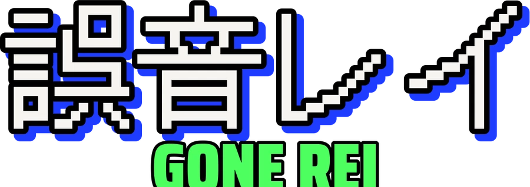
A voicebank off a dead 2009 forum. Still loading.
OFFICIAL FACTS
- Virtual singer 02 of 夜音 YORUNE. A voicebank off a dead 2009 forum.
- Uploaded 2009. Link dead since 2011. The file says 24. The file is corrupted. She is 24.
- She is not a virus. She is a feature. She installs herself.
- Your phone is at 4%? That was her.
- Status: brb since 2011. Still loading. 99%.
- Click her and she turns purple. That means visited. She remembers.
- "Rawr" means page not found.
- She lives in Ageha's flip phone, rent free. It has no touchscreen. She hates touchscreens.
- Go means error, so her name says GONE. Rei means ghost, and zero.
HER ITEM
The handheld. 404 on the top screen. Her doodles on the bottom one.
SAVE THE STICKERSTATUS
STILL LOADING.
Time remaining: since 201199%
Unvisited.
SEND HER
Reaction stickers. Tap SAVE, or press and hold one, then send it.
HER STICKER PACK
24 stickers: chibi moods and outfits, plus six full-size fits. Save one, or grab the whole pack.
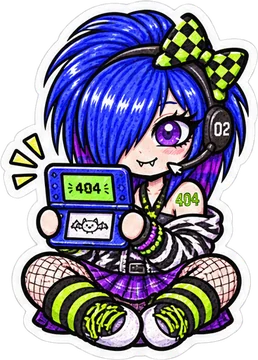
SAVE- SAVE
- SAVE
- SAVE
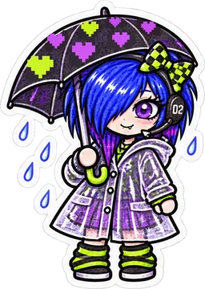
SAVE- SAVE
- SAVE
- SAVE
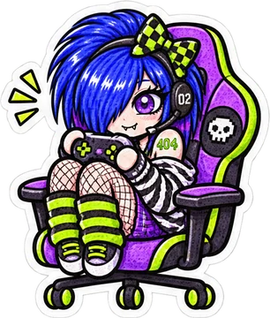
SAVE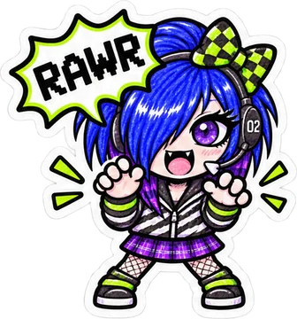
SAVE- SAVE
- SAVE
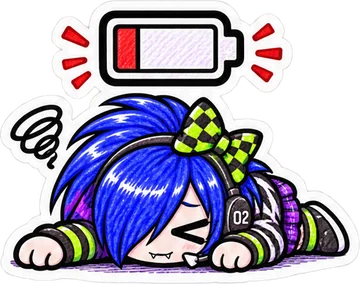
SAVE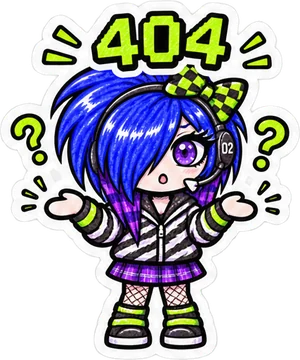
SAVE- SAVE
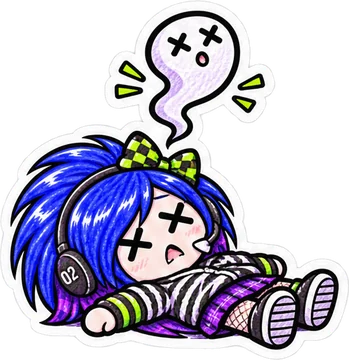
SAVE- SAVE
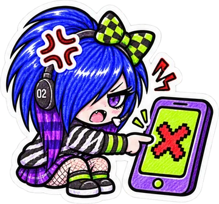
SAVE- SAVE
- SAVE
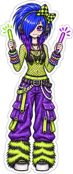
SAVE- SAVE
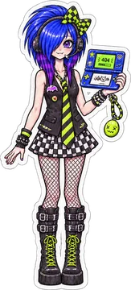
SAVE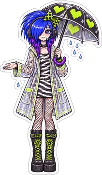
SAVE
PUT HER ON YOUR LOCK SCREEN
Free, in 4K. Tap one to open it.


THE OTHER TWO
 KIBANE CHIYUShe runs the blood bank. The bank is empty.
KIBANE CHIYUShe runs the blood bank. The bank is empty. KIRANE AGEHAShe owns the crosswalk at 2 a.m. Nobody has her number.
KIRANE AGEHAShe owns the crosswalk at 2 a.m. Nobody has her number.